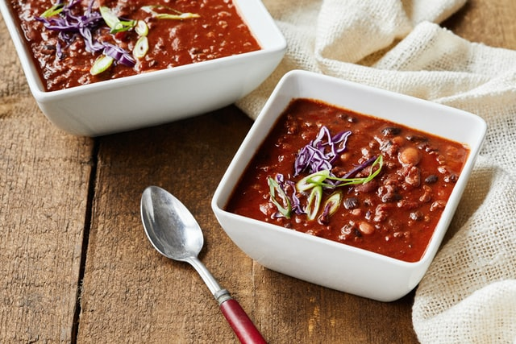

Turkey chili recipe

A bowl of warm and delicious chili
One of my all time favorites for the fall and winter. Not only is it warm and aromatic but it will keep you full too! Let's get this chili going.
Ingredients
- 1 pound ground turkey
- 1 large onion, chopped
- 1 can diced tomatoes
- 1 can black beans
- 2 tablespoons chili powder
- 1 tablespoon ground cumin
- 2 tablespoons salt
Steps
- Heat dutch oven over medium heat. Add turkey and onion. Cook until the turkey is lightly browned.
- Stir in diced tomatoes, black beans, chili powder, cumin, and salt. Bring to
a boil. Reduce to low and simmer for 40 minutes.
- Serve warm and enjoy!